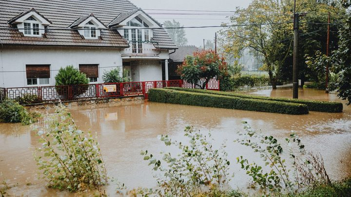

Santa Catarina · Clima
Santa Catarina · ClimaChuva com granizo atinge 23 cidades de Santa Catarina, e cinco decretam situação de emergência
O estrago que está por trás da corrida por telha e lona.
A variação apareceu em fiscalizações do Procon na Grande Florianópolis. O procedimento é estadual, e caso local vai para a promotoria da comarca.
Em 30 segundos · Modo de Leitura, formato original Santa Informa
O Ministério Público de Santa Catarina abriu inquérito civil.
O assunto é preço de material de construção depois dos temporais.
Quem abriu foi a 29ª Promotoria de Justiça da Capital, da área do consumidor.
A portaria é de quarta-feira, 2 de setembro.
Fiscalizações do Procon apontaram variação de até 356%.
Foi na Grande Florianópolis, depois da chuva com granizo.
Os produtos citados: telha, lona, cimento, madeira, tijolo, prego e parafuso.
O MP mandou recomendação a federações do comércio e a sindicatos.
Pede que não haja reajuste sem justificativa econômica.
O prazo para responder é de 72 horas.
Foram oficiados o Procon Estadual e sete Procons municipais.
Quem não cumprir pode responder a ação civil pública.
Santa CatarinaPublicada em Redação Santa Informa
O Ministério Público de Santa Catarina abriu um inquérito civil para apurar aumento de preço de material de construção depois dos temporais de agosto. A decisão é da 29ª Promotoria de Justiça da Capital, que atua na área do consumidor, e a portaria é de quarta-feira, 2 de setembro.
Segundo a portaria, a promotoria soube do assunto por publicações da imprensa e por fiscalizações do Procon. Essas fiscalizações apontaram variação de até 356% nos preços de materiais essenciais na Grande Florianópolis depois da chuva com granizo que atingiu o estado. A lista de produtos citada é bem direta: telha, lona plástica, cimento, madeira, tijolo, prego e parafuso. É exatamente o que a pessoa corre para comprar quando o vento levou parte do telhado.
O que o MP quer saber é se houve elevação desproporcional da margem de lucro e outras condutas que explorem a situação de quem foi atingido, o que o Código de Defesa do Consumidor não permite.
Junto com o inquérito, a promotoria expediu recomendação à Fecomércio/SC, à FCDL/SC, à Fecomac/SC, que reúne o comércio de material de construção, e aos Sindilojas. O pedido é que orientem os associados, com urgência, a não reajustar preço sem justificativa econômica, principalmente em produto essencial para consertar o estrago.
A recomendação também pede que as lojas não criem falsa sensação de escassez, de urgência ou de estoque acabando, que evitem publicidade enganosa e que deixem claros preço, condição de pagamento e disponibilidade. E pede que guardem organizados os documentos que mostram como o preço foi formado: nota fiscal, custo de compra, frete e margem de comercialização, para apresentar à fiscalização quando for pedido.
As entidades têm 72 horas para dizer se acolhem a recomendação, comprovar que avisaram os associados e relatar o que fizeram. O mesmo prazo vale para o Procon Estadual e para os Procons de Florianópolis, Biguaçu, Quilombo, Bom Jesus, Ipuaçu, Entre Rios e São José do Cedro, que precisam informar as reclamações recebidas e identificar os estabelecimentos denunciados.
Quem assina é o promotor de Justiça Giovanni Andrei Franzoni Gil. Pela portaria, não cumprir a recomendação, não responder ou ser flagrado em conduta irregular pode levar a medidas fora e dentro da Justiça, inclusive ação civil pública.
O procedimento tem caráter estadual. Se aparecer situação de interesse só local, ela é encaminhada para a promotoria daquela comarca. Os temporais de agosto atingiram 23 cidades catarinenses, e Porto Belo registrou alagamento em via pública. Quem vai trocar telha aqui no litoral compra no mesmo mercado que está sendo olhado agora.
O resumo de 30 segundos está no topo e a versão completa é o texto acima. Aqui ficam as três leituras da casa sobre o mesmo assunto.
Clara, a otimista
O melhor desta história é a velocidade. O granizo caiu no fim de agosto e o inquérito saiu na primeira semana de setembro, ainda no meio da reconstrução. Chegar antes é o que faz diferença nesse tipo de caso.
E o texto da recomendação serve de guia para qualquer consumidor. Peça orçamento por escrito, compare pelo menos três lojas e guarde a nota. Se o preço pular sem explicação, o Procon existe para isso. Saber que a fiscalização está de olho já muda o comportamento de quem pensou em aproveitar a situação.
Seu Prudêncio, o criterioso
Merece atenção uma distinção que o número de 356% não faz sozinho. Preço de material sobe também por motivo real: demanda que explode de uma hora para outra, estoque que acaba, frete que fica mais caro. O que a lei cobra não é preço parado, é justificativa econômica para o reajuste. Por isso a recomendação pede nota fiscal, custo de compra e margem organizados.
Vale acompanhar duas coisas. A primeira é a resposta das federações dentro das 72 horas, porque recomendação sem resposta costuma virar processo. A segunda é se algum Procon da Costa Esmeralda entra na apuração, já que hoje nenhum foi oficiado. Uma sugestão útil a quem for reformar: registre o orçamento antes de fechar, com data e valor, porque é esse papel que sustenta uma reclamação depois.
No conjunto, a medida está bem desenhada. Ela mira a formação de preço, não a loja específica, e deixa o caminho aberto para o comércio se explicar antes de qualquer punição. É o jeito certo de tratar um assunto que envolve milhares de estabelecimentos honestos.
Caco, o sarcástico
Caiu granizo, voou telhado, e a telha ficou mais cara. Que sincronia impressionante do mercado.
Mas olha o lado bom: agora existe um promotor perguntando por que, com prazo de 72 horas e pedido de nota fiscal. Poucas coisas organizam melhor uma planilha de preço do que um ofício do Ministério Público.
E a lição para o consumidor é velha e continua valendo: guarde o orçamento. Papel guardado é o único material de construção que não sobe de preço.
Fontes: Ministério Público de Santa Catarina, publicada em 2 de setembro de 2026, pela Coordenadoria de Comunicação Social, de onde saem a abertura do inquérito civil pela 29ª Promotoria de Justiça da Capital, a lista de materiais investigados, a variação de até 356% apontada em fiscalizações do Procon na Grande Florianópolis, a recomendação expedida à Fecomércio/SC, à FCDL/SC, à Fecomac/SC e aos Sindilojas, as orientações sobre reajuste, publicidade e guarda de documentos, o prazo de 72 horas, a lista de Procons oficiados (Estadual, Florianópolis, Biguaçu, Quilombo, Bom Jesus, Ipuaçu, Entre Rios e São José do Cedro), a fala do promotor Giovanni Andrei Franzoni Gil e o caráter estadual do procedimento. O número de 23 cidades atingidas pelos temporais é da Defesa Civil de Santa Catarina, já publicado por este portal. A imagem do topo é ilustrativa, de banco gratuito.
Santa Catarina · ClimaO estrago que está por trás da corrida por telha e lona.

Porto Belo · Poder PúblicoComo o litoral está se preparando para o próximo temporal.
 Santa Catarina · Direitos
Santa Catarina · DireitosOutra frente de atuação recente do MPSC.